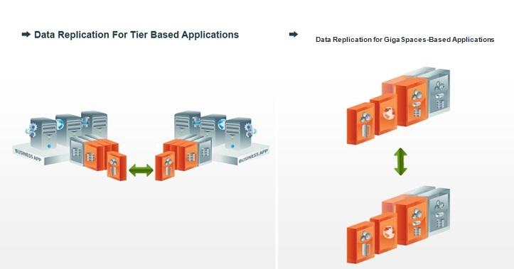

Multiple site replication is a very common deployment topology in the following scenarios:

The
This page describes how to establish replication between multiple Spaces in a typical WAN environment. Each Space is a separate network and there is a need for a designated outbound and inbound WAN Gateway machine or machines on each network, in order to interact with the other network(s).
This page describes two sample multi-site replication topologies. These are not the only supported topologies. In fact, the permutations of topologies are quite extensive, and discuss two of the more common topologies, which can also serve as a basis for other topologies as required by the user:
For both of the above topologies, replication is done in in a similar way. Each Space replicates the relevant data to its target Space(s) via a local WAN Gateway, which routes the data to the WAN Gateway of the target Space(s) and from there to the target Space. The data is replicated asynchronously in a reliable mode, which means that even if a primary Space instance fails on the source site, the backup Space instance that replaces it will immediately take control and replicate the missing data along with new data that has been generated on the newly elected primary Space instance. This is very similar to the Mirror Service replication scheme. The WAN Gateway is discussed in full below.
Replication can use Hub & Spoke, Ring, Hierarchical or Pass-Through architecture:

The following snippet shows how to configure a Space that resides in New York to replicate to two other Spaces, one in London and one in Hong Kong:
Each replication channel to the WAN Gateways can be configured with more parameters, and these parameters can applied to all WAN Gateways or specifically per WAN Gateway, for example:
Here, we specified a global bulk size of 1000 but have specifically overridden it in the replication channel to Hong Kong with 100, and have a global maximum redo log capacity for both targets of 1000000.
For more details about all the available configuration elements of the space WAN Gateway targets, refer to Configuring Targets.
Use the partitioned cluster schema
You should have the partitioned cluster schema used with the Space to enable replication to the WAN Gateway. If you are not interested in having backups running but have the replication to the WAN Gateway running, you should have ZERO as the number of backups. See the following example of an sla.xml configuration you can use in such a case:
<os-sla:sla cluster-schema="partitioned" number-of-instances="1" number-of-backups="0">
</os-sla:sla>
When there are no backups, running any failure of the primary might cause a loss of data.
The number of backups per partition is zero or one.
A WAN Gateway needs to be deployed locally as a Processing Unit in each site, and is composed of two different components; the delegator and the sink. The delegator is in charge of delegating outgoing replication from the local site to a remote WAN Gateway, and the sink is in charge of dispatching incoming replication from remote sites into the local Space.

The different WAN Gateway components need to locate each other across the different sites. For example, a delegator needs to locate the sink of the target WAN Gateway to which it delegates the replication. This lookup is accomplished via dedicated lookup services that the WAN Gateways use to register and locate each other. This lookup process is usually done across the WAN, so the most reasonable way of locating the lookup services is using unicast (multicast is also supported). The following example demonstrates a unicast lookup discovery.
The following is an excerpt from the pu-xml.jar file. For Dot Net developers, note that this deployment is performed using the standard Java deployment process.
Following the above example, here we demonstrate how to configure the local WAN Gateway processing unit in New York, which needs to send replication to London and Hong Kong and also receive replication from these two sites.
<os-gateway:delegator id="delegator"
local-gateway-name="NEWYORK" gateway-lookups="gatewayLookups">
<os-gateway:delegations>
<os-gateway:delegation target="LONDON"/>
<os-gateway:delegation target="HONGKONG"/>
</os-gateway:delegations>
</os-gateway:delegator>
<os-gateway:sink id="sink"
local-gateway-name="NEWYORK"
gateway-lookups="gatewayLookups"
local-space-url="jini://*/*/myNYSpace">
<os-gateway:sources>
<os-gateway:source name="LONDON" />
<os-gateway:source name="HONGKONG" />
</os-gateway:sources>
</os-gateway:sink>
<os-gateway:lookups id="gatewayLookups">
<os-gateway:lookup gateway-name="NEWYORK"
host="ny-gateway-host-machine" discovery-port="10001"
communication-port="7000" />
<os-gateway:lookup gateway-name="LONDON"
host="london-gateway-host-machine" discovery-port="10002"
communication-port="8000" />
<os-gateway:lookup gateway-name="HONGKONG"
host="hk-gateway-host-machine" discovery-port="10003"
communication-port="9000" />
</os-gateway:lookups>
<!--The above ports and host names are randomly selected and
have no meaning, all sites could designate the same ports as well-->
In the above example, we see that both the sink and the delegator need a reference to the WAN Gateway lookup configuration, because both components are using this configuration to locate the relevant component or to register themselves. They use their local WAN Gateway name to identify themselves to the lookup configuration, where they should be registered and where they should look for their targets.
The delegator and sink components are actually isolated and can even be deployed in separate Processing Units, but the most simple deployment is to bundle them two together. However, in some cases you may want to separate them across two or more machines due to system load or other reasons.
For full details and available configurations, refer to WAN Gateway Components.
A WAN Gateway and a Mirror Service are two different components, which can co-exist together without affecting each other. A WAN Gateway is just another reliable asynchronous target. As such, there is no need to demonstrate the mirror service alongside a WAN Gateway because they don't conflict with each other or require any special configuration when used in the same Space cluster.
By default, the WAN Gateway preserves the atomicity of distributed transactions (distributed transaction consolidation). This can be disabled by adding the following property to the Space configuration:
Distributed transaction consolidation is done by waiting for data from all the transaction participants before processing is done by the sink component. In some cases, the data from certain distributed transaction participants may be delayed due to network delay or disconnection, and this can cause delays in replication. In order to prevent this potential delay, you can set a timeout parameter that indicates how much time to wait for distributed transaction participant data before processing the data individually for each participant.
You can specify the behavior when processing is split into individual participants upon consolidation failure (timeout or other reasons); the unconsolidated transaction can be either aborted or committed.
While waiting for the pieces of a distributed transaction to arrive at the sink, replication isn't waiting but is keeping the data flow and preventing conflicts from happening.
The following example shows how to set the timeout for waiting for distributed transaction data to arrive. You can also set the amount of new operations to perform before processing data individually for each participant.
<os-gateway:sink id="sink" local-gateway-name="NEWYORK"
gateway-lookups="gatewayLookups"
local-space-url="jini://*/*/myNYSpace">
<os-gateway:sources>
<os-gateway:source name="LONDON" />
<os-gateway:source name="HONGKONG" />
</os-gateway:sources>
<os-gateway:tx-support
dist-tx-wait-timeout-millis="10000"
dist-tx-wait-for-opers="20"
dist-tx-consolidation-failure-action="commit"/> <!--or "abort"-->
</os-gateway:sink>
Distributed transaction participant data will be processed individually if 10 seconds have passed and not all of the participant data has arrived. or if 20 new operations were executed after the distributed transaction.
| Attribute | Default Value |
|---|---|
| dist-tx-wait-timeout-millis | 60000 milliseconds |
| dist-tx-wait-for-opers | unlimited (-1 = unlimited) |
| dist-tx-consolidation-failure-action | commit |
If you set the cluster-config.groups.group.repl-policy.processing-type property to global-source, all reliable asynchronous replication targets for that Space will work in non-distributed transaction consolidation mode. For example, a Mirror will also work in non-distributed transaction consolidation mode.
Consolidation failure can occur under normal circumstances, if the target WAN Gateway is restarted or crashes during the consolidation process. For example, you may have a scenario where the transaction was successfully consolidated and executed on the target cluster, but the WAN Gateway was stopped while sending confirmation to the transaction participants in the source site and some of them received the confirmation while others did not. In this case, the transaction is actually successfully executed in the target site, and by default when the consolidation failure event occurs, the unconfirmed part reaches the conflict resolution handler will abort it (by default), and the state will remain consistent.
Setting both dist-tx-wait-timeout-millis and dist-tx-wait-for-opers to unlimited (or to very high value) is risky. The replication backlog may accumulate due to a packet that is unconsolidated, causing the replication process to wait for consolidation that may never occur.
With this architecture, we have a master-slave topology where all data is manipulated in one site, and two other sites read the data but don't update it. In other words, the "other sites" - the slaves - should not replicate data to the other WAN Gateways.

In this case, New York's site will be the active site while London and Hong Kong will be the passive sites. As explained before, being passive does not necessarily mean no work is done in these sites. However, in terms of replication over the WAN, these sites should not replicate to the other sites and usually should not alter data replicated from other sites, because it may cause conflicts.
Like all pu.xml file. These are the contents of the file for each component:
With this architecture, we have a multi-master topology where data is generated and manipulated in all sites.

The example below describes two sites, but any number of sites is supported in the same manner. In a master-slave topology, each site should try to modify different subsets of the data as much as possible, because many conflicts can occur if multiple sites change the same Space entries at the same time. These conflicts can be resolved using a conflict resolver, which is described in detail in the Multi-Site Conflict Resolution topic.
In the example below, New York and London are the two active sites.
Here are the contents of the file for each component:
The Multi-Master running example page in the Service & Best Practices section includes a three-way setup that replicates data between three sites.
On occasion, there may be data that should not be replicated between sites but should still be replicated locally to the backup or a mirror service. If this is the case, it isn't suitable to specify that the object should not be replicated. A replication channel to a WAN Gateway is like any other replication channel, so a custom Replication Filter at the source Space can be used to filter the relevant data from being sent to the target WAN Gateway. This filtering should be based on the replication target name, in order to identify that the replication filter is called for the correct outgoing replication to the WAN Gateway.
For full details and an example, refer to Filtering Data.
To bootstrap a site from another site is to restart a site Space from scratch, and to populate it with data from another site Space. This can be useful after a very long disconnection where the replication redo-log in the source Spaces that replicate to this site was dropped due to breaching capacity limitations, and the disconnected site should therefore start fresh. Other reasons include an explicit planned downtime due to site maintenance that leads to a complete system bootstrap upon restart.
For more informaion on how to enable the bootstrap mechanism, refer to Bootstrapping Process.
You may have to modify your site topology during runtime. For example, a new site may be added and the existing sites may have to start replicating to it and receive replication from it. Alternatively, a site may be removed and the existing sites should stop holding replication backlogs for the removed site, and delete it from their list of WAN Gateway targets.
For more information on how to add and remove sites during runtime, refer to Changing Deployment during Runtime.
The following pages in the Services & Best Practices section provide more details on the Multi-Site Replication module:
You can also view the following video: